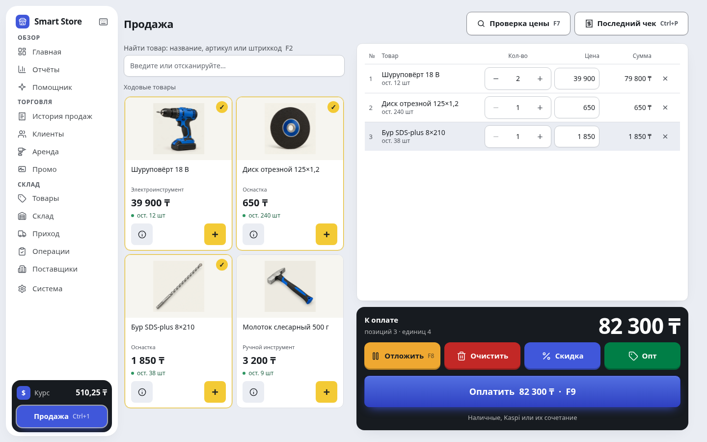
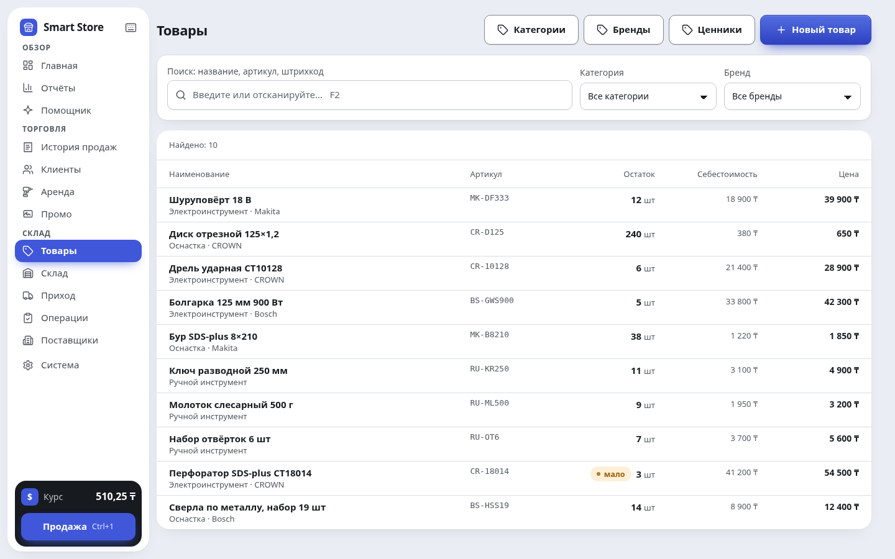

Программа для магазина инструментов и запчастей.
Smart Store объединяет кассу, склад, закупки, долги покупателей и аренду инструмента на компьютере с Windows. Основной учёт работает без интернета. Интерфейс доступен на русском и казахском, примеры на сайте показаны в тенге.
Как проходит продажа
Продавец находит товар по названию или штрихкоду, видит цену и остаток, добавляет нужное количество в чек. В Smart Store можно указать расчёт наличными, через Kaspi или записать покупку в долг. После проведения продажи меняется остаток, а операция попадает в историю.

Пример: два шуруповёрта по 39 900 ₸, диск за 650 ₸ и бур за 1 850 ₸ дают чек на 82 300 ₸. Это демонстрационный расчёт, а не предложение купить эти товары на сайте.
Выбор способа расчёта в программе фиксирует операцию учёта. Подключение банковских платежей и подходящего кассового оборудования стоит обсудить с поддержкой до начала работы.
Склад, закупки и остатки
В каталоге собраны название, артикул, цена и количество товара. Поиск помогает быстро проверить наличие инструмента или расходника. Приёмка увеличивает складской остаток, продажа уменьшает его; сведения о поставщике и закупке позволяют вернуться к поступлению.
В отчётах можно посмотреть продажи, выручку и прибыль. Для проверки работы используйте учебные позиции: оформите приход, проведите продажу и сравните остаток в каталоге с историей операций.

Для распознавания накладных нужно настроить собственный ключ Gemini. Эта функция использует интернет и квоты Google. Перед проведением прихода проверьте названия, количества и цены распознанных позиций.
Лимиты запросов и условия оплаты Gemini зависят от вашего проекта Google. До подключения платного тарифа проверьте квоты API и настройки оплаты. Покупка лицензии Smart Store не включает оплату запросов Google; основные операции магазина доступны без AI.
Долги покупателей и аренда инструмента
Покупку в долг можно связать с клиентом и затем учитывать погашение. Это помогает видеть, кому выдан товар и какая сумма ещё не возвращена. Для проката инструмента в программе предусмотрен отдельный раздел аренды.
На пробном периоде проверьте свой обычный сценарий: выдачу инструмента, возврат и расчёт с клиентом. Если магазину нужны особые правила залога или тарификации, уточните их поддержку перед переносом рабочего учёта.
Что работает без интернета и где хранятся данные
- Без интернета
- Продажи на компьютере, склад и основные отчёты.
- С интернетом
- Внешний доступ с телефона, AI, курс валют и загрузка обновлений.
- Основная база
- На компьютере магазина со Smart Store.
- Резервные копии
- Локальные автокопии каждые 2 часа; отдельная копия через «Копия на флешку».
Инструкция по резервным копиям и восстановлению → Храните внешнюю резервную копию отдельно от рабочего компьютера. Перед началом рабочего учёта проверьте, где она сохраняется. Подробнее о хранении и передаче данных →
Как посмотреть магазин с телефона
Сначала установите Smart Store на компьютер. В программе откройте настройки доступа с телефона и отсканируйте QR-код. Страница открывается в браузере, её можно добавить на главный экран телефона.
На мобильных экранах доступны итоги, поиск товара и корзина. Компьютер со Smart Store должен оставаться включённым; для доступа извне нужен интернет. Если магазин уже подключён, войдите по его коду.
Подключение телефона и решение проблем со входом →
Пароль, выход и потерянный телефон
Код магазина открывает нужный адрес, но не заменяет PIN или пароль. Пользователей телефона создаёт владелец магазина в Smart Store на компьютере; подтверждение электронной почты для этого не требуется.
Забыли пароль? Попросите владельца открыть «Система» → «Логины для телефона», выбрать ваш логин и задать «Новый пароль». Все прежние входы этого пользователя прекращаются; на телефоне нужно войти с новым паролем.
Потеряли телефон? Владелец может нажать «Выйти на всех телефонах» у пользователя. Если доступ сотрудника больше не нужен, нажмите «Заблокировать». Это закрывает доступ, сохраняя документы магазина и историю операций.
Если владелец сам не может открыть защищённые настройки, обратитесь в поддержку и опишите ситуацию. Не отправляйте пароль, PIN, ключ Gemini или базу магазина в первом сообщении.
Установка, пробные 14 дней и лицензия
Smart Store устанавливается на Windows 10/11, 64 бита. Первые 14 дней можно работать без кода активации. Затем для новых операций нужна лицензия на один компьютер. Сохранённые данные остаются доступны для просмотра, печати и выгрузки.
Лицензия оплачивается один раз и привязана к одному компьютеру. Стоимость, активация, перенос и условия оплаты уточняются в WhatsApp. Условия лицензии →
- Откройте инструкцию и официальный установщик. С телефона можно передать ссылку на компьютер.
- Пройдите путь до первого чека: настройте магазин, заведите остаток через приход и проведите продажу.
- Перед переносом рабочих данных обсудите с поддержкой нужные функции и лицензию.
Установщик пока без цифровой подписи: Windows может показать предупреждение. Официальный источник — этот сайт и репозиторий выпусков Smart Store. Если источник файла вызывает сомнения, уточните его в поддержке перед запуском.
От установки до первого чека
Первые 14 дней код активации не нужен. При первом открытии выберите язык, укажите название магазина и настройте принтер. Если принтера нет, выберите «Принтера пока нет»: программа сохраняет чек в PDF.
Ниже — пример для новой учебной установки. В рабочую базу вносите фактические остатки и цены своего магазина.
- Заведите остаток. Откройте «Приход» → «Новый приход». В поле «Товар» введите название и выберите предложение завести новый товар. Можно создать его прямо здесь, без отдельного перехода в каталог.
- Заполните строку. Например: шуруповёрт 18 В, количество 5, закупка 28 000 ₸, цена продажи 39 900 ₸. Нажмите «Добавить». Для начального остатка поставщика можно оставить пустым: такой приход учитывается оплаченным.
- Проведите приход. Нажмите «Провести приход», проверьте данные и подтвердите «Да, провести». Черновик ещё не меняет склад. После проведения в примере будет 5 штук, закупочная сумма — 140 000 ₸.
- Соберите чек. Перейдите в «Продажа», найдите товар по названию или штрихкоду и добавьте одну штуку. В примере итог составит 39 900 ₸.
- Завершите продажу. Нажмите «Оплатить» или F9. Для наличных укажите полученную сумму — например, 50 000 ₸ — и проведите продажу. Программа покажет сдачу 10 100 ₸ и сохранённый чек.
Проверьте результат: продажа появилась в истории, в каталоге осталось 4 штуки, чек сохранён в папке «Чеки». Добавление карточки товара само по себе не создаёт остаток — для продажи нужен проведённый приход.
В «Системе» нажмите «Создать копию» и проверьте папку резервных копий. Внешнюю копию храните отдельно от рабочего компьютера.
Если застряли на шаге, напишите в поддержку название шага и текст ошибки. Для первого обращения не нужны база магазина, PIN или код активации.
Как активировать лицензию после пробы
- Откройте «Система» → «Лицензия» и нажмите «Скопировать» рядом с кодом этого компьютера.
- Передайте этот код в поддержку Smart Store и уточните стоимость и условия. В ответ получите код активации для своего компьютера.
- Вставьте полученный код в поле «Код активации» и нажмите «Активировать». Успешный результат — надпись «Лицензия действует».
Код компьютера и код активации различаются: в поле активации нужен ответ поддержки. Для применения кода интернет не требуется. При замене компьютера обратитесь за переносом лицензии.
После пробного срока сохранённые данные, отчёты и резервные копии остаются доступны. Для новых продаж, приходов и аренды нужна действующая лицензия.